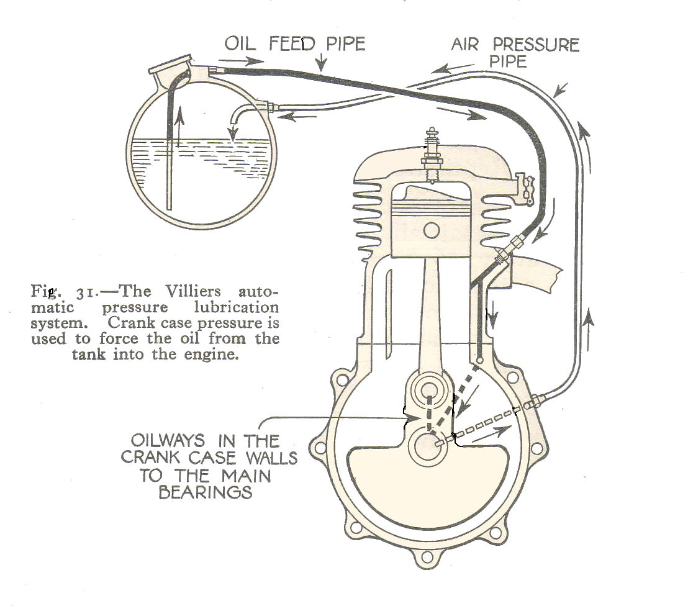
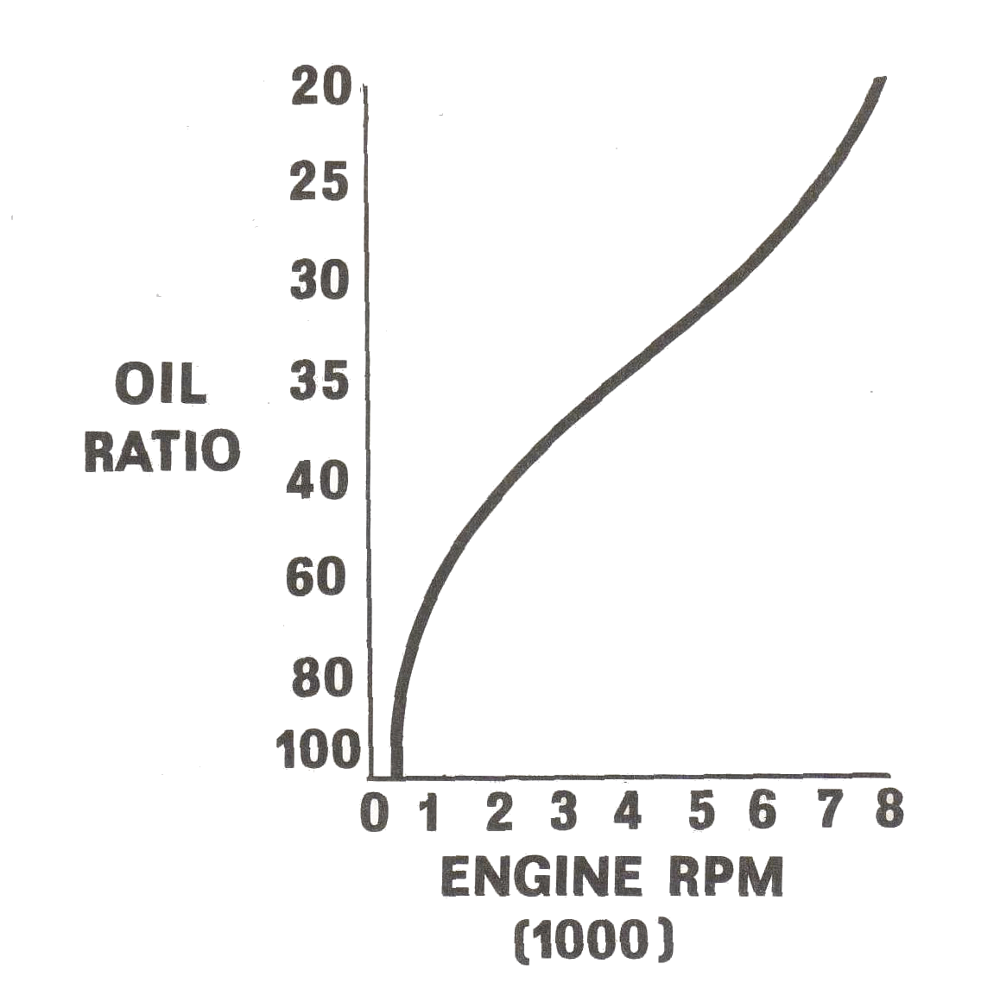

Oil Injection

The thing that hath been, it is that which shall be;
and that which is done is that which shall be done:
and there is no new thing under the sun.
Ecclesiastes 1:9
¶ Back in the day we mixed our Two-Stroke Oil with our gas at 20 parts gas to one part oil. We lived with the smoke and fouled spark plugs. Then some very experianced and knowledgeable people said Use 40 to one. It's OK, won't hurt a thing and your plugs won't foul out with oil. Weeeell, yes, but... If you are running hard, 40 to one is just too lean. At 20 to one you are going to foul out a spark plug now and then however, piston sezures will be few and far between. That is just how it is.
So it was from the beginning of time. Well, maybe not that long but Pre-Mixing the gas and oil went on for many years. Then, in the 1960s, the Japanese manufacturers said we can do better and they did. Yamaha introduced the YA-6 in 1964. It was supposedly the first motorcycle to use Oil Injection, but was it? Some might disagree. It seems that nothing is really new under the sun.
So here, in 2021, I will bloviate about Motorcycle Oil Injection Systems. The Two Stroke Engine is slowly fading away because of pollution concerns, so the use for all this information may go bye-bye soon. But maybe not. KTM just brought out what they call Transfer Port Injection or TPI. Where that might be going I don't know. We will just have to wait and see.
Way back in the days of Yore Scott, Villiers, and Veloce all had lubricating oil pumps on their Two-Stroke engines.
 Scott Oil Pump 1928
Scott Oil Pump 1928
So, it would seem that Oil Injection, in some way, shape or form, has been around since 1915 or earlier. Why was it not used more? Two stroke engines were cheap and very low power in the years before World War Two and just after World War Two. The poor man's form of cheap transportation and there were a lot of poor around. When you are short of yenom, you really don't want to pay for "Extras" that are not nessesary. The engines used Deflector Pistons and small, little Ports. Everyone was happy to go putt-putt-putt or rather, ring-ding-ding, slowly. That was good enough.
Then it happened. Starting in the late 1940s and early 1950s MZ's Walter Kaaden discovered the principles of the Pressure Waves in Two Stroke Expansion Chambers along with the Rotary Disc Valve and the Boost Port. This added lots of power to what was a cheap, low power engine.

 MZ started to win races in the FIM (Fédération Internationale de Motocyclisme) International 125 class. In 1961 a top MZ factory racer/mechenic/engineer named Ernst Degner stole all Kaaden's work and defected to the West from East Germany. He sold those secrets and a few parts to Suzuki for the equivalent of £10,000, 1961, British Pounds Sterling. (Equivalent to $264,595.94, 2021, USA Dollars) and a factory ride. A very good deal in those days.
MZ started to win races in the FIM (Fédération Internationale de Motocyclisme) International 125 class. In 1961 a top MZ factory racer/mechenic/engineer named Ernst Degner stole all Kaaden's work and defected to the West from East Germany. He sold those secrets and a few parts to Suzuki for the equivalent of £10,000, 1961, British Pounds Sterling. (Equivalent to $264,595.94, 2021, USA Dollars) and a factory ride. A very good deal in those days.
Don't feel too bad for Kaaden. In World War Two, at Peenemünde, he was part of the Nazi team that invented the V-1 Buzz Bomb or the Hs.293A-1 flying bomb, depending on who you believe. Used slave labor to build them too. Thousands died. Slave lives did not matter at all.
Nice guy, huh?

An interesting side note... When Degner worked for MZ, their research department had one dynamometer to test their engines on. They could cast cylinders three at a time. Seems two stroke reasearch goes through cylinders and pistons like candy. Suzuki? They had eight dynamometers and cast their cylinders fifty at a time. Good example of the difference between Capitalism, (Can you say Trump USA-USA-USA?) and socialism or communism (Like what Fraudster-in-chief Biden and the Progressive DemocRATS push). Just sayin'...
Suzuki and then the rest of the Japanese Two Stroke manufacturers added tuned exhausts, disc valves and boost ports to their racing bikes and then to their street bikes. Most small two strokes were quite inexpensive. Now they are quite powerful too.


Anyway, the mid 1960s was the start of the Two-Stroke revolution. More power equals more popularity equals more machines on the market. Single cylinders went to twins and on to triples. With more people riding Two Strokes, easier engine lubrication was needed. "Fuel/oil Mixing" was not wanted. Too messy, too much work.
Another benefit is lots of oil when you need it and very little oil when you don't. This means no more fouled spark plugs... kinda sorta. A lot less anyway. The Oil Injection Pump is geared to the engine so the faster the engine runs the more oil is pumped to it. At top speed we have our 20:1 oil/fuel mix. At idle the oil/fuel mix may be close to 100:1. Perfect. Spark Plug Fouling and smoke was way down and Carbonization of the cylinder/head down as well. Not to mention engine seizures.
Then, as pollution concerns rose so did four stroke engine power and Ring-Dings started to loose favor. Like old soldiers two-strokes have largely faded away. But we still have to fix the ones that are left.
If your Oil Injection Pump fails your engine will blow up from lack of lubrication. This seems to scare a lot of people. I don't know why. I have never run across an engine failure caused by a broken oil pump and I have been repairing motorcycles since 1967. If it really worries you just run Pre-Mix and forget the Oil Injection. But I will not. I will keep the oil tank filled and things will work just fine. What is that? Don't want to run Pre-Mix but still worried? OK, You can always test the pumps output to be sure. Where do you find out an Oil Pumps output? Look in your shop manual.
In addition I like to look at the exhaust every once in a while. I like to see just a hint of smoke coming out.
OK, Yamaha was the first to come out with modern oil injection in their Auto Lube Automatic Oiling System in 1964. Soon other Japanese manufacturers like Suzuki, Kawasaki, Bridgestone and others jumped on board.
Here are some explanations of Oil Injection Systems on bikes that you may run across. I copied these right from the appropriate Factory's shop manual. This should cover 99% of the Two Stroke Motorcycle Oil Injection Systems out there.
OK, now we know all about Two Stroke Oil Injection Pumps. Right? Well, maybe not. As I said, after working on many, many, Two Strokes, back in the day, I ran into zero failures. HOWEVER, that was then. This is now. Consider this. If people just run Pre-Mix and let their oil tank run dry the pump will probably be ruined from no oil. If they block off the pump and remove it, it is now gone who knows where.

 Here is another thing to consider. If your Two Stroke Bike is a Suzuki or Kawasaki your engine is specifically designed to have oil enter the engine at the crankshaft bearings and the cylinder walls. If it enters from the fuel (Pre-Mix) side, will the oil reach all the bearing(s)? What if it does but only 60% of the oil reaches the inner parts of the bearing? How long is that engine going to last?
Here is another thing to consider. If your Two Stroke Bike is a Suzuki or Kawasaki your engine is specifically designed to have oil enter the engine at the crankshaft bearings and the cylinder walls. If it enters from the fuel (Pre-Mix) side, will the oil reach all the bearing(s)? What if it does but only 60% of the oil reaches the inner parts of the bearing? How long is that engine going to last?
Ok, so we want to use the Oil Injection Pump. Odds are the engine we are working on is thirty, fourty, or more years old and we do not know it's history. If we have spark, compression and fuel the engine will start. Here is where we can use Pre-Mix to help get the Oil Pump going safely. This is what you need to do.
- Inspect and if nessesary, clean the Oil Tank and Oil Line going to the Oil Pump. Make sure the vent in the Oil Tank/Oil Cap is not plugged.
- Fill up Oil Tank with fresh Two Stroke Oil.
- Bleed the Oil Pump itself.
- Put a somewhat lean Fuel mix in the fuel tank. Say 40:1 gas to oil mix.
- Start the engine and let it idle. With the engine idling, turn the Oil Pump adjustment lever to full on. Run the engine that way until you are sure the oil is getting to the engine. A sure sign would be lots of smoke coming out the exhaust pipe.
- Change out the Pre-Mix with straight gas and again check for smoke when you turn the Oil Pump adjustment lever to full on. If this engine is a new rebuild, it would not hurt to run this tank full of Pre-Mix out to give a bit extra lubrication while the engine breaks in.
- Lastly, it would not hurt a thing to measure the Oil Pump's output. Again, look in your shop manual for instructions on how to do it.
A word about smoke. We are dealing with old parts here. That includes old crankshaft seals. Old seals can be worn, cracked, or hardened from age... Sorta like me! This lets transmission oil get through from the Power Take Off side of the engine. Yeah, yeah, I seem to leak a lot, from various openings that should be sealed, too. So if the engine is pouring smoke out the Exhaust Pipe, replace the seals before repacing the Oil Pump. On an old engine the Crankshaft Seals need replacing anyway. Both of them. (I sure wish I could. Oh well.)
Now we come to the Oil Pump itself. Our real problem here is parts availability. The only parts we can get are called New-Old-Stock (NOS). These parts were made new by the Motorcycle's Manufacturer way back in the day. As time passes these same Manufacturers get tired of storing these obsolete parts and sell them to whoever will buy them. These people circle around and try to sell these parts to you and make a bunch of money... well, that is the idea anyway. This is quite OK, 'cause you need the part, right? So you need to find a parts diagram of the Oil Pump, get the part number of the part you need and order it. To order it Look:
Online
On Ebay.com
On Amazon.com
At a local Motorcycle Wrecking Yard
At a local Motorcycle Dealer
Remember, some Oil Pump parts are not available separate from the Oil Pump, meaning you have to buy the whole Oil Pump.

Did this page help you? Would you like to help us? If so Click HERE
Copyright © Dansmc.com. All rights reserved.